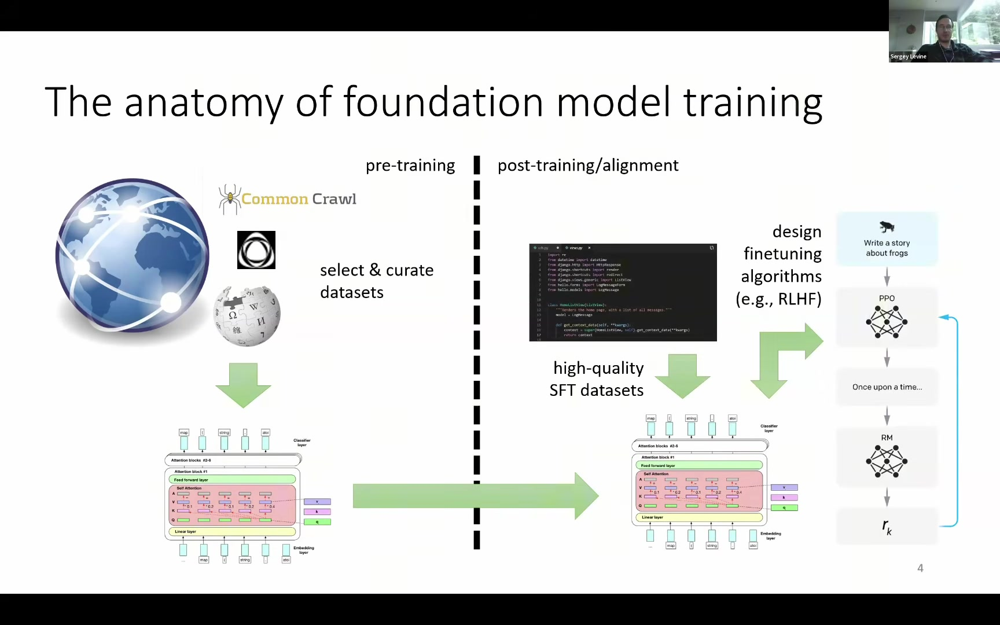
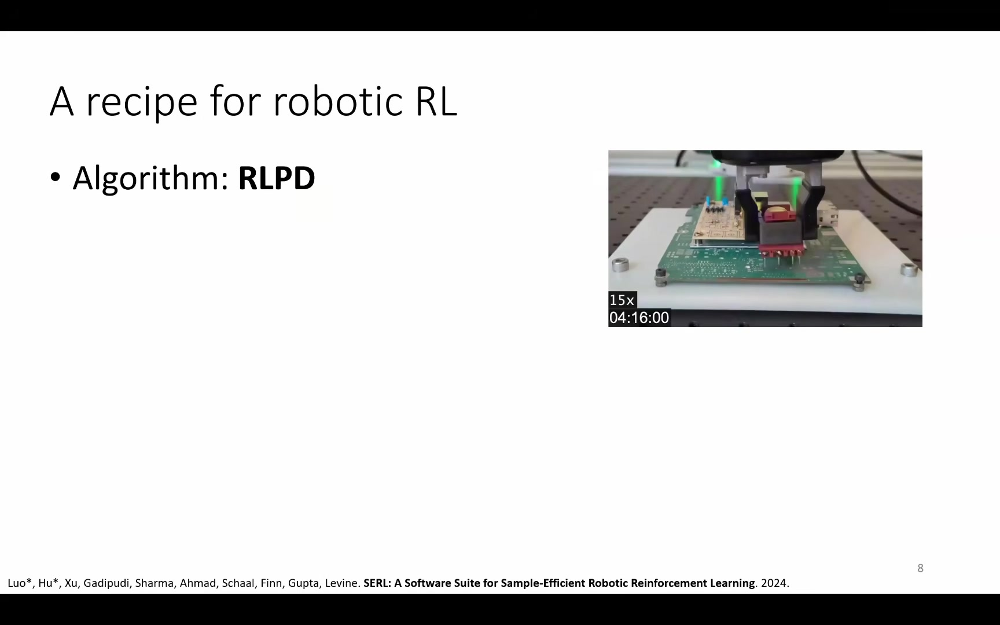
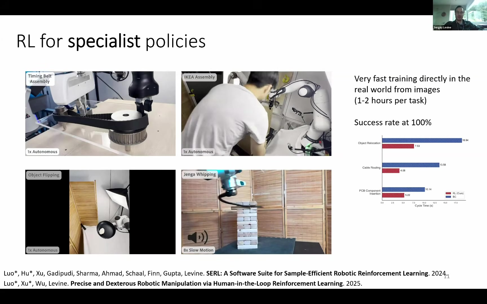

Pre-training
방대한 웹·로봇 데이터에서 사실, 시각 패턴, 언어 지시, 다양한 행동의 공통 구조를 배운다.
- 폭넓은 지식
- 새 상황으로의 일반화
- 언어와 시각의 연결
엔드투엔드 강화학습의 정면돌파보다 현실적인 전략: 제너럴리스트가 스페셜리스트의 탐색을 돕고, 스페셜리스트의 경험이 다시 제너럴리스트를 강화하는 순환.

큰 모델의 지식을 탐색 prior로 사용하고, 특화 정책의 고품질 자율 데이터를 다시 큰 모델에 증류한다.
“집을 청소하고, 빨래를 개고, 저녁을 차려줘”라는 요청에 텍스트만 돌려주는 모델과 물리 세계에서 행동하는 모델 사이에는 큰 간극이 있다.

방대한 웹·로봇 데이터에서 사실, 시각 패턴, 언어 지시, 다양한 행동의 공통 구조를 배운다.
고품질 데이터와 RL을 이용해 이미 아는 것을 구체적인 과제의 성공, 속도, 강건성으로 바꾼다.



RLPD 기반의 작은 정책은 데모와 온라인 경험을 함께 재사용하며 실제 로봇의 정밀 조작을 몇 시간 안에 숙달한다.
실제 이미지와 로봇 상호작용으로 특정 작업장 환경의 정책을 빠르게 완성한다.
대시보드 조립, 타이밍벨트, IKEA 조립 등 정밀 과제에서 높은 안정성을 보인다.
보상을 빨리 얻도록 최적화되어 사람의 머뭇거림과 불필요한 재조준을 제거한다.





| 제거한 부품 | 결과 | 해석 |
|---|---|---|
| RL Token | 거의 작동하지 않음 | 제너럴리스트의 상황 인식이 가장 중요한 입력 |
| Pass-Through action | 같은 성능에 훨씬 느리게 도달 | 행동 힌트는 필수는 아니지만 강력한 가속기 |
| BC Regularizer | Base 수준에서 개선 실패 | Prior에서 무모하게 벗어나는 것을 막는 고삐 |
| Action Chunk | 개선 실패 | 정밀 접촉 동작은 단일 스텝보다 시간 구조가 필요 |
CFGRL은 디퓨전의 classifier-free guidance를 “좋은 행동 쪽으로 분포를 기울이는 제어 가능한 정책 개선 연산자”로 재해석한다.
보상을 최대화하되, 모든 데이터에 맞춘 참조 정책 π̂에서 너무 멀어지지 말라는 목적함수다.
정답 정책은 전체 데이터 분포에 행동의 좋음을 지수적으로 곱해 좋은 쪽으로 기울인 형태다.
좋음을 이진 최적성 변수 o로 표현하면 CFG와 동일해진다. 대응 관계는 w = 1/β.


“데이터에 있던 그대로.” 좋은 행동과 나쁜 행동을 모두 재현한다.
“잘된 쪽으로.” 방향은 맞지만 좋은 영역과 나쁜 영역의 밀도 차이가 아직 작다.
“잘된 쪽으로 훨씬 세게.” 작은 선호도 차이를 지수적으로 증폭해 좋은 데이터의 모드에 집중한다.
AWR은 나쁜 샘플의 가중치를 거의 0으로 만들어 실효 배치 크기를 축소한다. CFGRL은 좋은 샘플을 o=1, 나쁜 샘플을 o=0의 예시로 사용해 모든 샘플을 학습 신호로 유지한다.
다양성이 무너지고 원래 데이터 분포 밖으로 밀려날 수 있다. 이미지 생성에서 과도한 CFG scale이 결과를 태우듯, 로봇에서도 적절한 w를 선택해야 한다.


SigLIP 400M + Gemma 4B + action expert 860M. 이미지, 언어 서브태스크, 웹 데이터, chain-of-thought, 이산·연속 액션을 함께 다룬다.
별도의 SigLIP 400M + Gemma 270M + value head. “지금 목표에 가까워지고 있는가”를 판단하는 작은 심판이다.
대규모 지식, 언어 이해, 시각 표현, 새 환경으로의 일반화
실세계 병목 과제의 정밀 숙달, 높은 성공률, 빠른 사이클 타임